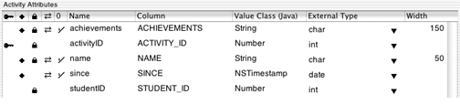

To create a new relationship, you need more than one entity.
Quit the client application, stop the server application, and open
the Admissions.eomodeld file
from within Project Builder. In EOModeler, complete the following
steps to enhance the model:
activityID;
Column: ACTIVITY_ID; External Type: int;
Internal Data Type: Integer.
Do not make this a client-side class property or a server-side class
property. name; Column:
NAME; External Type: char;
Internal Data Type: String, width
50. Make this a client-side class property. Verify that this attribute
is also marked as a server-side class property.achievements;
Column: ACHIEVEMENTS; External Type: char;
Internal Data Type: String,
width 150. Make this a client-side class property. Verify that this attribute
is also marked as a server-side class property.since; Column:
SINCE; External Type: date;
Internal Data Type: Date;
Make this a client-side class property. Verify that this attribute
is also marked as a server-side class property. Don't lock on
this attribute: Deselect the lock icon to the left of the attribute
to do this.studentID)
into the Activity table. In diagram view, do this by selecting studentID in
the Student table, then choose Copy from the Edit menu, then click
in the Activity table, and choose Paste from the Edit menu. Verify
that Activity.studentID is
not marked as a primary key or as a server-side class property in
the Activity entity.activityID the
primary key in the Activity entity by clicking in the key column. The
new entity should look as shown in Figure 3-29.Figure 3-29 Activity entity
